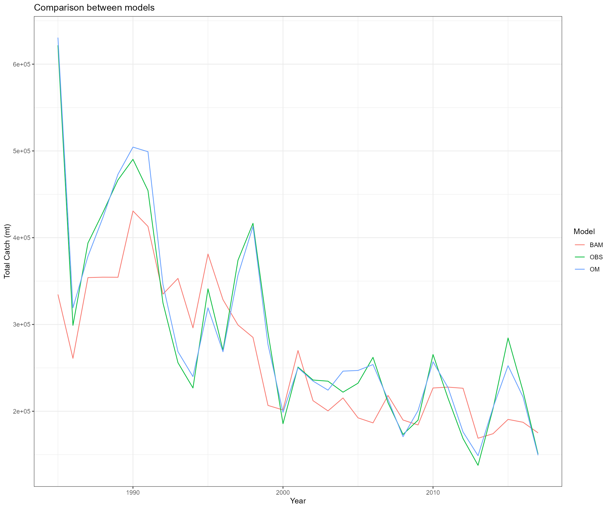
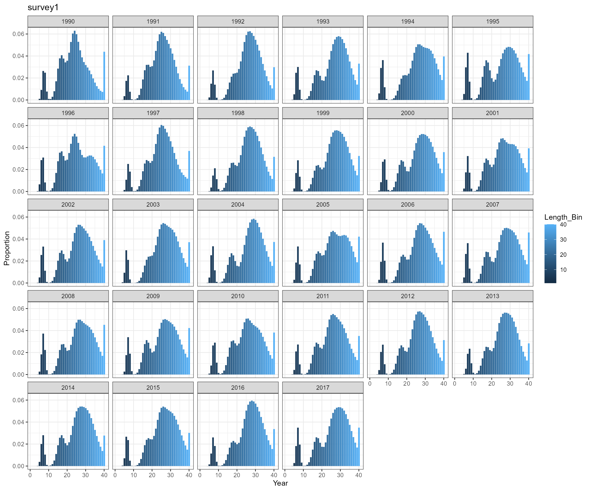
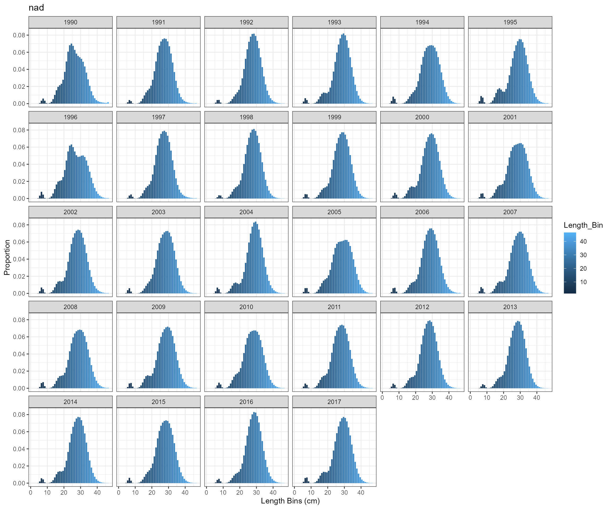
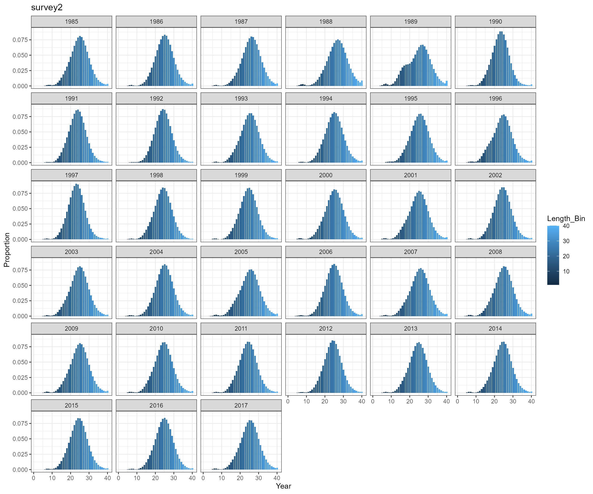

Stock assessment data simulation
Updated on March 14, 2022
05_Stock_assessment_data_simulation.RmdEwE scenario
We used the output data from EwE AMO_PCP scenario for generating single species stock assessment input data. The AMO_PCP scenario incorporates Atlantic Multidecadal Oscillation and precipitation information in the ecosystem modeling work and it creates a strong response.

IFA4EBFM::create_fishery() is used to simulate fishery
data
- Input data
- EwE annual catch-at-age and weight-at-age data
- BAM annual Coefficient of variation (CV) of catch and sample size data.
- Output data
- Ecosystem operating model total catch in biomass, total catch in abundance, catch-at-age in abundance, catch-at-age in biomass, CV of catch, sample size, and weight-at-age data
- Observed total catch in biomass and catch-at-age in proportion for one fleet
- Units information
# Create fishery ----------------------------------------------------------
fishery_sample_num <- cbind(
menhadenSA_output$t.series$acomp.cRs.n[which(menhadenSA_output$t.series$year %in% years)],
menhadenSA_output$t.series$acomp.cBs.n[which(menhadenSA_output$t.series$year %in% years)],
menhadenSA_output$t.$acomp.cBn.n[which(menhadenSA_output$t.series$year %in% years)],
menhadenSA_output$t.series$acomp.cRn.n[which(menhadenSA_output$t.series$year %in% years)]
)
fishery_sample_num[fishery_sample_num==-99999] <- 0
fishery <- create_fishery(
file_path = file.path(ewe_output_path, "catch_annual.csv"),
skip_nrows = 8,
species = 4:10,
species_labels = paste0("age", ages),
ewe_years = 0:32,
data_years = years,
fleet_num = 1,
selectivity = NULL,
CV = rep(0.05, length(years)),
sample_num = apply(fishery_sample_num, 1, sum),
waa_path = file.path(ewe_output_path, "weight_annual.csv")
)
IFA4EBFM::create_survey() is used to simulate survey
data
- Input data
- EwE monthly biomass-at-age and weight-at-age data
- BAM survey number, time, selectivity, catchability, CV, sample size data
- Output data
- Ecosystem operating model biomass-at-age, abundance-at-age, abundance index, CV of surveys, sample size, weight-at-age, and length-at-age data
- Observed abundance indices, length composition in proportion/in number using different approaches
- Units information
- Survey information
- survey1 survey: Oct from 1990 - 2017; length composition data from 1990 - 2017
- survey2 survey: April from 1985 - 2017; length composition data from 2013 - 2017
- survey3 survey: April from 1990 - 2017; no length composition data
- survey4 survey: June from 1985 - 2017; no length composition data
# Create survey ----------------------------------------------------------
# selectivity settings
survey_num <- 4
survey_name <- c("survey1", "survey2", "survey3", "survey4")
# set up survey time
# Need to check Table 26 from BAM assessment: Length cutoffs used to distinguish age-0 from age-1+ Atlantic menhaden at different regions.
survey1_year <- 1990:2017 # Adult Index (survey1): age 1+ fish; September - January; Time of the year when menhaden were most abundant in this region
survey2_year <- 1985:2017 # Adult Index (survey2): age 1+ fish; March - May
survey3_year <- 1990:2017 # Adult Index (survey3): age 1+ fish: April - July
survey4_year <- 1985:2017 # YOY Index (survey4): covered all months, many surveys starts at July
survey_time <- list(
survey1 = data.frame(
year = survey1_year,
month = rep(10, length(survey1_year)) # Oct 15
),
survey2 = data.frame(
year = survey2_year,
month = rep(4, length(survey2_year)) # April 15
),
survey3 = data.frame(
year = survey3_year,
month = rep(4, length(survey3_year)) # April 15
),
survey4 = data.frame(
year = survey4_year,
month = rep(6, length(survey4_year)) # June 1
)
)
# set up survey selectivity
survey1_sel <- IFA4EBFM::logistic(
pattern = "simple_logistic",
x = ages,
slope_asc = 2.2,
location_asc = 3.0
)
survey2_sel <- IFA4EBFM::logistic(
pattern = "double_logistic",
x = ages,
slope_asc = 4.3,
location_asc = 2.3,
slope_desc = 3.5,
location_desc = 2.3
)
survey3_sel <- IFA4EBFM::logistic(
pattern = "double_logistic",
x = ages,
slope_asc = 7.0,
location_asc = 0.3,
slope_desc = 7.0,
location_desc = 2.0
)
survey_selectivity <- list(
survey1 = as.data.frame(
matrix(rep(survey1_sel, times = length(years)), ncol = length(ages), byrow = TRUE),
row.names = years
),
survey2 = as.data.frame(
matrix(rep(survey2_sel, times = length(years)), ncol = length(ages), byrow = TRUE),
row.names = years,
),
survey3 = as.data.frame(
matrix(rep(survey3_sel, times = length(years)), ncol = length(ages), byrow = TRUE),
row.names = years,
),
survey4 = as.data.frame(
matrix(rep(c(1, rep(0, 6)), times = length(years)), ncol = length(ages), byrow = TRUE),
row.names = years,
)
)
survey_selectivity <- lapply(survey_selectivity, setNames, paste("age", ages))
# set up catchability
yr_catchability_change_survey4 <- 1986
survey_catchability <- list(
survey1 = menhadenSA_output$t.series$q.nad[which(menhadenSA_output$t.series$year %in% years)],
survey2 = menhadenSA_output$t.series$q.mad[which(menhadenSA_output$t.series$year %in% years)],
survey3 = menhadenSA_output$t.series$q.sad[which(menhadenSA_output$t.series$year %in% years)],
survey4 = c(menhadenSA_output$t.series$q.jai[which(menhadenSA_output$t.series$year %in% c(years[1]:yr_catchability_change_survey4))], menhadenSA_output$t.series$q2.jai[which(menhadenSA_output$t.series$year %in% c((yr_catchability_change_survey4 + 1):tail(years, n = 1)))])
)
survey_catchability <- lapply(survey_catchability, setNames, years)
# set up CV
survey_CV <- list(
survey1 = menhadenSA_output$t.series$cv.U.nad[which(menhadenSA_output$t.series$year %in% years)],
survey2 = menhadenSA_output$t.series$cv.U.mad[which(menhadenSA_output$t.series$year %in% years)],
survey3 = menhadenSA_output$t.series$cv.U.sad[which(menhadenSA_output$t.series$year %in% years)],
survey4 = menhadenSA_output$t.series$cv.U.jai[which(menhadenSA_output$t.series$year %in% years)]
)
survey_CV <- lapply(survey_CV, setNames, years)
# set up sample number
# survey_sample_num <- list(
# survey1 = menhadenSA_output$t.series$lcomp.nad.nfish[which(menhadenSA_output$t.series$year %in% years)],
# survey2 = menhadenSA_output$t.series$lcomp.mad.nfish[which(menhadenSA_output$t.series$year %in% years)],
# survey3 = rep(NA, length = length(years)),
# survey4 = rep(NA, length = length(years))
# )
survey_sample_num <- list(
survey1 = rep(800, length= length(years)),
survey2 = rep(800, length= length(years)),
survey3 = rep(800, length= length(years)),
survey4 = rep(800, length= length(years))
)
survey_sample_num <- lapply(survey_sample_num, setNames, years)
for (i in 1:length(survey_sample_num)){
survey_sample_num[[i]][survey_sample_num[[i]] == -99999] <- NA
}
# set up age-length population structure
length_bin <- seq(10.0, 400, 10)/10 # in cm
mid_length_bin <- seq(10.5, 405, 10)/10 # in cm
nbin <- length(length_bin)
bin_width <- 1
length_CV <- list(
survey1 = 0.12,
survey2 = 0.17,
survey3 = NA,
survey4 = NA
)
# Create survey
survey <- IFA4EBFM::create_survey(
file_path = file.path(ewe_output_path, "biomass_monthly.csv"),
skip_nrows = 8,
species = 4:10,
species_labels = paste0("age", ages),
years = years,
survey_num = survey_num,
survey_time = survey_time,
selectivity = survey_selectivity,
catchability = survey_catchability,
CV = survey_CV,
sample_num = survey_sample_num,
waa_path = file.path(ewe_output_path, "weight_monthly.csv"),
length_bin = length_bin,
mid_length_bin = mid_length_bin,
nbin = nbin,
bin_width = bin_width,
length_CV = length_CV
)Survey length composition over time
SS3 approach 

BAM approach 
Key findings
- Tried two approaches to calculate age-length probability matrix
- use SS3 approach using
pnormin R - rewrite ADMB function in R based on BAM code
- the two approaches produce almost identical results, so will only use SS3 approach for further analysis
- use SS3 approach using
- Observed a very high proportion of fish in length bin 10.5 cm
- need to check selectivity-at-age 0 and perhaps modify selectivity pattern for survey survey1
- expand length bins. According to EwE outputs, mean length-at-age 0 is around 6 cm, which is below the current first length bin 10.5 cm.
Modify selectivity pattern for survey survey1 and update length bins
- Change
slope_ascfrom 2.2 to 3.0:- selectivity-at-age from original scenario: 0.003, 0.030, 0.240, 1.00, 0.400, 0.027, 0.001
- updated selectivity-at-age: 0.0003, 0.0060, 0.1147, 1.0000, 0.4251, 0.0268, 0.0014
- Change the first length bin from 10 cm to 1 cm and the last length bin from 40.5 cm to 46.5 cm
survey1_sel <- IFA4EBFM::logistic(
pattern = "simple_logistic",
x = ages,
slope_asc = 3.0,
location_asc = 3.0
)
survey1 = as.data.frame(
matrix(rep(survey1_sel, times = length(years)), ncol = length(ages), byrow = TRUE),
row.names = years
)
colnames(survey1) <- paste0("ages", ages)
survey_selectivity$survey1 <- survey1
# set up age-length population structure
length_bin <- seq(10, 500, 10)/10 # in cm
mid_length_bin <- seq(15, 505, 10)/10 # in cm
nbin <- length(length_bin)
bin_width <- 1
# Create survey
survey <- IFA4EBFM::create_survey(
file_path = file.path(ewe_output_path, "biomass_monthly.csv"),
skip_nrows = 8,
species = 4:10,
species_labels = paste0("age", ages),
years = years,
survey_num = survey_num,
survey_time = survey_time,
selectivity = survey_selectivity,
catchability = survey_catchability,
CV = survey_CV,
sample_num = survey_sample_num,
waa_path = file.path(ewe_output_path, "weight_monthly.csv"),
length_bin = length_bin,
mid_length_bin = mid_length_bin,
nbin = nbin,
bin_width = bin_width,
length_CV = length_CV
)
IFA4EBFM::create_biodata() is used to prepare
biological data for a stock assessment
biodata <- create_biodata(nsex=1, narea=1, ages=ages, years=years,
length_bin=length_bin, mid_length_bin=mid_length_bin,
nbin=nbin, bin_width=bin_width, length_CV=length_CV,
annual_weight_path=file.path(ewe_output_path, "weight_annual.csv"),
monthly_weight_path=file.path(ewe_output_path, "weight_monthly.csv"),
species=4:10,
species_labels=paste0("age", ages),
skip_nrows=8,
lw_a=0.01, lw_b=3,
k=0.331,
t0 = -0.1,
winf = 0.237,
maturity_at_age=c(0.0, 0.1, 0.5, 0.9, 1.0, 1.0, 1.0), # From both BAM and EwE
natural_mortality_at_age=c(1.76, 1.31, 1.03, 0.9, 0.81, 0.76, 0.72) # From both BAM and EwE
)Key findings
- EwE Von Bertalanffy Growth model uses a specialized equation. Carrying capacity parameter k from the model needs to be carefully compared before using the value. The default values used in the EwE weight-at-age calculation are different compared to the BAM input values, so the weight-at-age matrices would be different from different models.